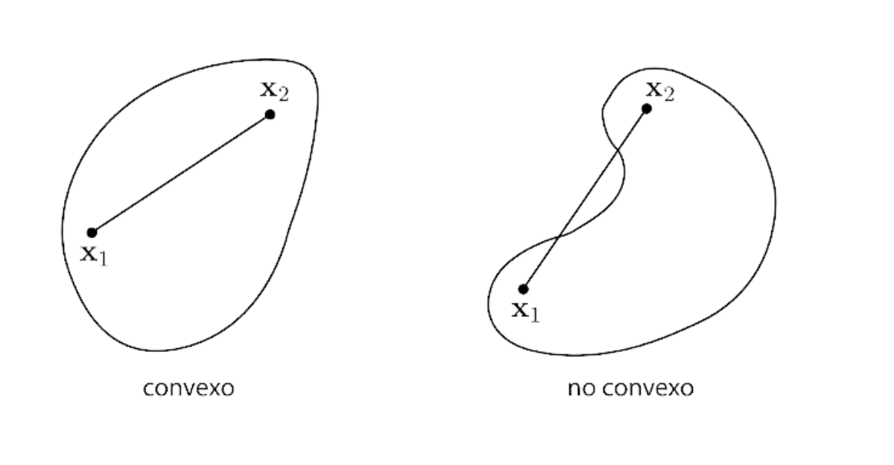
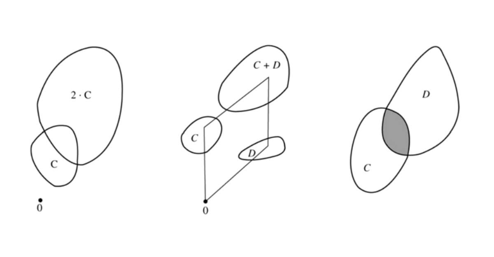
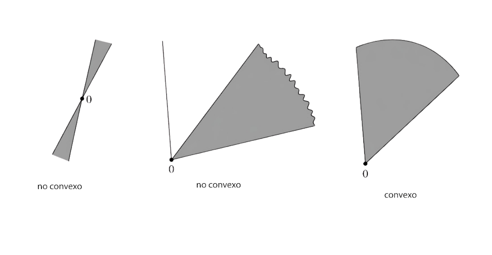
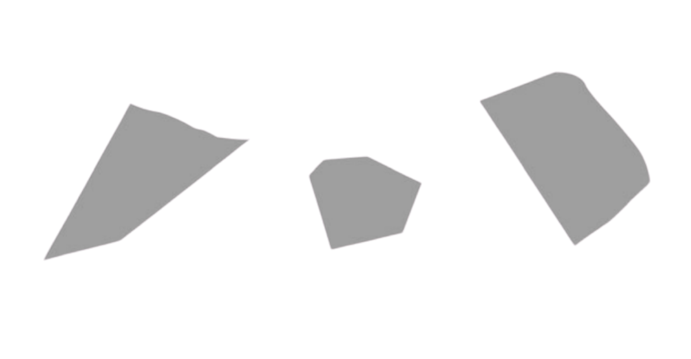

Optimización
Bienvenido al Libro de Texto Digital Interactivo de Optimización. Esta plataforma formativa ha sido concebida como una obra viva y modular de referencia analítica y numérica rigurosa para los alumnos de la ESFM. El libro abarca el estudio formal de los métodos lineales, no lineales y convexos, combinando la fundamentación matemática estricta con visualizadores interactivos en tiempo real y código computacional verificable.
La unidad de aprendizaje Optimización contribuye al perfil de egreso de la Licenciatura en
Matemática Algorítmica proporcionando bases teóricas y prácticas para el desarrollo de los algoritmos de
optimización que se aplican en la solución de problemas actuales. Asimismo, fomenta las habilidades de
resolución de problemas, pensamiento crítico, trabajo colaborativo y la capacidad para aplicar los
conocimientos con compromiso ético.
Eje Curricular: Tiene como antecedentes Álgebra Lineal Avanzada y Cálculo
Multivariable, y como consecuentes Aprendizaje Máquina Estadístico, Teoría del
Control y Negociación de Activos Financieros.
Resuelve problemas de optimización a partir de técnicas algorítmicas para problemas lineales y no lineales.
👨🏫 Cuerpo Docente & Asesoría Académica
Acompañamiento teórico, algorítmico y de programación para los estudiantes del curso:
Unidad 1: Herramientas para la Optimización
Fundamentación analítica, topológica y geométrica rigurosa basada en los Apéndices A, B, C y Capítulo 1 de David G. Luenberger & Yinyu Ye, Linear and Nonlinear Programming (4ta Edición, Springer 2016).
1.1 Revisión de Álgebra Lineal Luenberger Apéndices A y C
Esta sección cubre la totalidad de los fundamentos del Apéndice A (Revisión Matemática) y del Apéndice C (Eliminación Gaussiana) de Luenberger, proporcionando la estructura algebraica, topológica y numérica indispensable para el diseño y análisis de algoritmos de optimización.
1.1.1 Notación Matricial Luenberger Apéndice A.1–A.2
Revisión formal de la teoría de conjuntos, operadores extremales de optimización, espacios matriciales y partición por bloques.
1. Concepto de Cotas (Superior e Inferior)
Sea $S \subset \mathbb{R}$ un subconjunto no vacío de números reales:
2. Definición Formal de Supremo ($\sup$) e Ínfimo ($\inf$)
Por el Axioma de Completitud de los números reales ($\mathbb{R}$), todo conjunto no vacío y acotado posee cotas extremales únicas:
- $\forall x \in S \implies x \le \sup(S)$ (es cota superior).
- $\forall \varepsilon > 0, \; \exists x \in S \text{ tal que } x > \sup(S) - \varepsilon$ (ningún número menor es cota superior).
- $\forall x \in S \implies x \ge \inf(S)$ (es cota inferior).
- $\forall \varepsilon > 0, \; \exists x \in S \text{ tal que } x < \inf(S) + \varepsilon$ (ningún número mayor es cota inferior).
3. Distinción Fundamental: $\sup / \inf$ frente a $\max / \min$
La diferencia clave en optimización radica en la pertenencia al conjunto:
- Máximo ($\max$) y Mínimo ($\min$): Si el supremo pertenece a $S$, entonces $\max(S) = \sup(S)$. Si el supremo no pertenece a $S$, el conjunto no tiene máximo (aunque su supremo exista perfectamente en $\mathbb{R}$).
- Ínfimo ($\inf$) y Mínimo ($\min$): Si el ínfimo pertenece a $S$, entonces $\min(S) = \inf(S)$. Si el ínfimo no pertenece a $S$, el conjunto no tiene mínimo.
- Relevancia en Optimización: Si optimizamos sobre conjuntos abiertos o regiones no acotadas, la función puede acercarse a un límite sin alcanzarlo jamás. Por esta razón, teoremas rigurosos como el Teorema 1 de Separación de Luenberger se enuncian con $\inf_{\mathbf{x} \in C} \mathbf{a}^T\mathbf{x}$ en lugar de $\min$, garantizando validez universal incluso si el conjunto $C$ no contiene a su frontera.
- Valor Mínimo (Escalar $\in \mathbb{R}$): $\min_{x \in S} f(x) = f(1) = 3$.
- Conjunto Argmin (Subconjunto de puntos $\subset S$): $\operatorname{argmin}_{x \in S} f(x) = \{1\}$.
- Valor Mínimo Global: Como $(x_1^2-1)^2 \ge 0$ y $x_2^2 \ge 0$, el menor valor alcanzable es $\min_{\mathbf{x} \in \mathbb{R}^2} f(\mathbf{x}) = 0$.
- Conjunto $\operatorname{argmin}$ (Múltiples Puntos Óptimos): El mínimo $0$ se alcanza cuando $x_1^2 = 1$ (es decir, $x_1 = \pm 1$) y $x_2 = 0$: $$\operatorname{argmin}_{\mathbf{x} \in \mathbb{R}^2} f(\mathbf{x}) = \left\{ \begin{pmatrix} 1 \\ 0 \end{pmatrix}, \; \begin{pmatrix} -1 \\ 0 \end{pmatrix} \right\}$$ Nota Pedagógica: Esto evidencia con precisión por qué el $\operatorname{argmin}$ se define matemáticamente como un conjunto de vectores y no como un número escalar.
| Conjunto $S \subset \mathbb{R}$ | Ínfimo ($\inf S$) | Mínimo ($\min S$) | Supremo ($\sup S$) | Máximo ($\max S$) | Diagnóstico de Pertenencia |
|---|---|---|---|---|---|
| Intervalo Cerrado $[2, 5]$ | $2$ | $2$ | $5$ | $5$ | Ambos extremos pertenecen al conjunto ($2 \in S, 5 \in S$). |
| Intervalo Abierto $(2, 5)$ | $2$ | No existe | $5$ | No existe | Las cotas extremales no pertenecen al conjunto ($2 \notin S, 5 \notin S$). |
| Semiabierto $[2, 5)$ | $2$ | $2$ | $5$ | No existe | El ínfimo sí pertenece ($2 \in S$), pero el supremo no ($5 \notin S$). |
| Sucesión $\{1 - \frac{1}{n} : n \in \mathbb{N}\}$ | $0$ | $0$ (con $n=1$) | $1$ | No existe | $S = \{0, \frac{1}{2}, \frac{2}{3}, \frac{3}{4}, \dots\}$. Se acerca a $1$ tanto como se desee, pero $1 \notin S$. |
| Semirrecta $(0, \infty)$ | $0$ | No existe | $+\infty$ | No existe | Acotado inferiormente ($\inf=0$), pero no acotado superiormente ($\sup=+\infty$). |
Una matriz es un arreglo rectangular de números, llamados elementos. La matriz misma se denota mediante una letra mayúscula en negrita $\mathbf{A}$. Cuando no se utilizan números específicos, los elementos se denotan mediante letras minúsculas en cursiva con un doble subíndice $a_{ij}$, donde el primer índice $i$ designa la fila y el segundo índice $j$ designa la columna:
Convención de Vectores Fila y Columna: Espacios $E_n$ frente a $E^n$ (Luenberger p. 495)
Las matrices de una sola fila se denominan vectores fila; las matrices de una sola columna se denominan vectores columna. Ambos tipos se denotan con letras minúsculas en negrita:
Partición de Matrices en Submatrices y Bloques (Luenberger p. 495)
En optimización es frecuente particionar matrices trazando líneas divisorias entre bloques:
Siguiendo este patrón, escribimos $\mathbf{A} = [\mathbf{B} \mid \mathbf{N}]$ para la partición donde $\mathbf{B}$ y $\mathbf{N}$ son submatrices contiguas. Esta notación es el pilar de la programación lineal, donde particionamos una matriz $\mathbf{A} \in \mathbb{R}^{m \times n}$ de la siguiente manera:
- $\mathbf{B}$: Submatriz cuadrada $m \times m$ formada por $m$ columnas linealmente independientes de $\mathbf{A}$ (matriz básica, no singular).
- $\mathbf{N}$: Submatriz de dimensiones $m \times (n-m)$ que contiene las columnas restantes (matriz no básica).
Si el vector $\mathbf{x}$ se descompone conformemente como $\mathbf{x} = (\mathbf{x}_B, \mathbf{x}_N)$, entonces la ecuación de restricciones $\mathbf{A}\mathbf{x} = \mathbf{b}$ se expresa como:
$$\mathbf{A}\mathbf{x} = [\mathbf{B} \mid \mathbf{N}] \begin{pmatrix} \mathbf{x}_B \\ \mathbf{x}_N \end{pmatrix} = \mathbf{B}\mathbf{x}_B + \mathbf{N}\mathbf{x}_N = \mathbf{b}$$En una solución básica, se fijan en cero las variables no básicas ($\mathbf{x}_N = \mathbf{0}$). La ecuación se reduce a $\mathbf{B}\mathbf{x}_B = \mathbf{b}$, lo que permite obtener los valores de las variables básicas mediante inversión matricial: $$\mathbf{x}_B = \mathbf{B}^{-1}\mathbf{b}$$
* Determinante: $\det(\mathbf{B}) = (2)(3) - (1)(1) = 6 - 1 = 5 \neq 0 \implies \mathbf{B}$ es no singular.
* Matriz Inversa: $\mathbf{B}^{-1} = \frac{1}{5} \begin{bmatrix} 3 & -1 \\ -1 & 2 \end{bmatrix} = \begin{bmatrix} 0.6 & -0.2 \\ -0.2 & 0.4 \end{bmatrix}$.
1.1.2 Espacios Luenberger Apéndice A.3
Estructura del espacio euclidiano $n$-dimensional $E^n$, producto interior, ortogonalidad, subespacios y operadores lineales.
Demostración Formal Completa de Luenberger (p. 497)
Sea $M \subset E^n$ un subespacio lineal y sea $M^\perp$ su complemento ortogonal: $$M^\perp = \left\{ \mathbf{y} \in E^n : \mathbf{y}^T\mathbf{x} = 0, \; \forall \mathbf{x} \in M \right\}$$
1.1.3 Valores Propios y Formas Cuadráticas Luenberger Apéndice A.4
Dada una matriz cuadrada $\mathbf{A}$ de $n \times n$, un escalar $\lambda$ y un vector no nulo $\mathbf{x} \neq \mathbf{0}$ que satisfacen la ecuación $\mathbf{A}\mathbf{x} = \lambda \mathbf{x}$ se denominan, respectivamente, valor propio (autovalor) y vector propio (autovector) de $\mathbf{A}$.
Para que $\lambda$ sea un valor propio es condición necesaria y suficiente que la matriz $(\mathbf{A} - \lambda \mathbf{I})$ sea singular, lo que conduce a la ecuación característica: $$\det(\mathbf{A} - \lambda \mathbf{I}) = 0$$ La expansión de este determinante produce un polinomio de orden $n$, el cual puede resolverse para obtener $n$ raíces complejas (posiblemente repetidas), que constituyen los autovalores de $\mathbf{A}$. A partir de aquí, asumimos que $\mathbf{A}$ es simétrica.
Mediante la transformación ortogonal $\mathbf{y} = \mathbf{Q}^T\mathbf{x} \iff \mathbf{x} = \mathbf{Q}\mathbf{y}$, la forma cuadrática se desacopla en una suma de cuadrados canónica: $$\mathbf{x}^T\mathbf{A}\mathbf{x} = \mathbf{y}^T\mathbf{Q}^T\mathbf{A}\mathbf{Q}\mathbf{y} = \mathbf{y}^T\mathbf{\Lambda}\mathbf{y} = \sum_{i=1}^n \lambda_i y_i^2$$
| Clasificación | Condición de la Forma Cuadrática | Criterio Espectral |
|---|---|---|
| Definida Positiva ($PD$) | $\mathbf{x}^T\mathbf{A}\mathbf{x} > 0, \quad \forall \mathbf{x} \neq \mathbf{0}$ | $\lambda_i > 0, \quad \forall i \in \{1,\dots,n\}$ |
| Semidefinida Positiva ($PSD$) | $\mathbf{x}^T\mathbf{A}\mathbf{x} \ge 0, \quad \forall \mathbf{x} \in E^n$ | $\lambda_i \ge 0, \quad \forall i \in \{1,\dots,n\}$ |
| Definida Negativa ($ND$) | $\mathbf{x}^T\mathbf{A}\mathbf{x} < 0, \quad \forall \mathbf{x} \neq \mathbf{0}$ | $\lambda_i < 0, \quad \forall i \in \{1,\dots,n\}$ |
| Semidefinida Negativa ($NSD$) | $\mathbf{x}^T\mathbf{A}\mathbf{x} \le 0, \quad \forall \mathbf{x} \in E^n$ | $\lambda_i \le 0, \quad \forall i \in \{1,\dots,n\}$ |
| Indefinida | Cambia de signo según el vector $\mathbf{x}$ | $\exists \lambda_j > 0$ y $\exists \lambda_k < 0$ |
1. ¿Qué es una Curva de Nivel de una Forma Cuadrática?
Sea $\mathbf{x} = (x_1, x_2)^T \in \mathbb{R}^2$ y una matriz simétrica real $\mathbf{A} = \begin{bmatrix} a_{11} & a_{12} \\ a_{12} & a_{22} \end{bmatrix}$. La forma cuadrática asociada define una superficie tridimensional $z = q(x_1, x_2)$: $$q(x_1, x_2) = \mathbf{x}^T\mathbf{A}\mathbf{x} = a_{11}x_1^2 + 2a_{12}x_1x_2 + a_{22}x_2^2$$ Una curva de nivel de valor constante $c \in \mathbb{R}$ es el conjunto de todos los puntos $(x_1, x_2)$ que satisfacen: $$\mathcal{C}_c = \left\{ (x_1, x_2) \in \mathbb{R}^2 : a_{11}x_1^2 + 2a_{12}x_1x_2 + a_{22}x_2^2 = c \right\}$$ Geométricamente, representa el corte horizontal de la superficie $z = q(x_1, x_2)$ a una altura fija $z = c$, proyectado sobre el plano cartesiano $(x_1, x_2)$.
2. Desacoplamiento por Autovectores (Rotación a los Ejes Principales)
El término cruzado $2a_{12}x_1x_2$ hace que la cónica esté inclinada/rotada respecto a los ejes originales $(x_1, x_2)$. Por el Teorema Espectral (Luenberger Apéndice A.4), existe una matriz ortogonal de rotación $\mathbf{Q} = [\mathbf{u}_1 \mid \mathbf{u}_2]$ formada por los autovectores unitarios de $\mathbf{A}$ tal que: $$\mathbf{Q}^T\mathbf{A}\mathbf{Q} = \mathbf{\Lambda} = \begin{bmatrix} \lambda_1 & 0 \\ 0 & \lambda_2 \end{bmatrix}$$ Al aplicar el cambio de variables $\mathbf{x} = \mathbf{Q}\mathbf{y}$ (donde $\mathbf{y} = (y_1, y_2)^T$ representa las coordenadas sobre los ejes de los autovectores), la ecuación se transforma exactamente en: $$\mathbf{x}^T\mathbf{A}\mathbf{x} = c \quad \iff \quad \mathbf{y}^T\mathbf{\Lambda}\mathbf{y} = c \quad \iff \quad \lambda_1 y_1^2 + \lambda_2 y_2^2 = c$$
3. Relación con la Ecuación Canónica de las Cónicas
- Semiejes de la elipse: Las longitudes son $r_1 = \sqrt{\frac{c}{\lambda_1}}$ en dirección del autovector $\mathbf{u}_1$, y $r_2 = \sqrt{\frac{c}{\lambda_2}}$ en dirección de $\mathbf{u}_2$.
- Efecto de la magnitud del autovalor: Un autovalor más grande ($\lambda_i \uparrow$) produce una curvatura más pronunciada de la superficie y, por tanto, un semieje más corto ($r_i \downarrow$).
- Interpretación en Optimización: Si $\lambda_1 = \lambda_2$, las curvas son círculos perfectos; si $\lambda_1 \gg \lambda_2$, las elipses son muy alargadas y el número de condición $\kappa(\mathbf{A}) = \frac{\lambda_1}{\lambda_2}$ es alto, provocando oscilaciones lentas en métodos de gradiente.
4. Diagnóstico Inmediato mediante Determinante y Traza
El cálculo de autovalores para una matriz $2 \times 2$ proviene del polinomio característico $\lambda^2 - \operatorname{tr}(\mathbf{A})\lambda + \det(\mathbf{A}) = 0$:
| Signo del Determinante ($\det\mathbf{A} = \lambda_1\lambda_2$) | Signo de la Traza ($\operatorname{tr}\mathbf{A} = \lambda_1+\lambda_2$) | Signos de $\lambda_1, \lambda_2$ | Geometría de las Curvas de Nivel | Tipo de Punto Crítico en el Origen |
|---|---|---|---|---|
| $\det(\mathbf{A}) > 0$ | $\operatorname{tr}(\mathbf{A}) > 0$ ($a_{11}>0$) | $\lambda_1 > 0, \; \lambda_2 > 0$ | Elipses concéntricas cerradas | Mínimo Global Estricto |
| $\det(\mathbf{A}) > 0$ | $\operatorname{tr}(\mathbf{A}) < 0$ ($a_{11}<0$) | $\lambda_1 < 0, \; \lambda_2 < 0$ | Elipses concéntricas (valores $c<0$)< /strong> | Máximo Global Estricto |
| $\det(\mathbf{A}) < 0$ | Indiferente | $\lambda_1 > 0, \; \lambda_2 < 0$ | Hipérbolas cruzadas | Punto de Ensilladura (Saddle Point) |
| $\det(\mathbf{A}) = 0$ | $\operatorname{tr}(\mathbf{A}) \neq 0$ | Un autovalor es nulo ($\lambda_2=0$) | Líneas rectas paralelas | Valle de Mínimos No Únicos |
Guía de Uso: Modifica los coeficientes de $\mathbf{A} = \begin{pmatrix} a_{11}
& a_{12} \\ a_{12} & a_{22} \end{pmatrix}$. Observa cómo:
1. El término $a_{12}$ rota los ejes elípticos en la dirección de los
autovectores.
2. Si $\det(\mathbf{A}) > 0$ se forman elipses (mínimo). Si
$\det(\mathbf{A}) < 0$ se forman hipérbolas (ensilladura).
1.1.4 Conceptos Topológicos y Funciones Luenberger Apéndice A.5–A.6
Esta sección desarrolla de forma rigurosa los fundamentos de topología en el espacio euclidiano $E^n$, sucesiones, compacidad de Bolzano-Weierstrass, continuidad, el Teorema del Valor Extremo de Weierstrass, derivabilidad multivariable, matrices Jacobianas y Hessianass, aproximaciones de Taylor de orden 1 y 2, el Teorema de la Función Implícita con derivación matricial y la notación asintótica de Landau.
El espacio euclidiano $E^n$ está dotado de la métrica estándar inducida por la norma $d(\mathbf{x}, \mathbf{y}) = \|\mathbf{x} - \mathbf{y}\| = \left(\sum_{i=1}^n (x_i - y_i)^2\right)^{1/2}$.
- Abierto: $S$ es abierto si alrededor de todo punto en $S$ hay una esfera contenida en $S$. En general, carecen de fronteras definidas.
- Interior ($\mathring{S}$): Conjunto de puntos en $S$ que son centro de alguna esfera contenida en $S$. Es el mayor conjunto abierto contenido en $S$.
- Cerrado: $P$ es cerrado si todo punto arbitrariamente cercano a $P$ es miembro de $P$ (si $\mathbf{x}_k \to \mathbf{x}$ con $\mathbf{x}_k \in P \implies \mathbf{x} \in P$).
- Clausura ($\bar{P}$): Es el menor conjunto cerrado que contiene a $P$.
- Frontera: Es la parte de la clausura de un conjunto que no está en su interior.
* Compacto (Heine-Borel en $E^n$): $K \subset E^n$ es compacto si y solo si es simultáneamente cerrado y acotado.
Toda sucesión acotada $\{\mathbf{x}_k\}_{k=1}^\infty \subset E^n$ contiene al menos una subsucesión convergente. En particular, si $K \subset E^n$ es un conjunto compacto y $\{\mathbf{x}_k\} \subset K$:
$$\exists \, \text{subsucesión } \{\mathbf{x}_k\}_{k \in \mathcal{K}} \subseteq \{\mathbf{x}_k\} \quad \text{tal que} \quad \lim_{k \in \mathcal{K}} \mathbf{x}_k = \mathbf{x}^* \in K$$Relevancia en Optimización: Garantiza que las trayectorias iterativas generadas por algoritmos acotados siempre poseen al menos un punto de acumulación factible dentro del conjunto.
"Sea $f$ una función continua de valores reales sobre un subconjunto compacto $K$ de $E^n$. Entonces $f$ es acotada sobre $K$ y alcanza su valor mínimo y su valor máximo en $K$."
Si $K \subset E^n$ es compacto no vacío y $f: K \to \mathbb{R}$ es continua:
$$\exists \mathbf{x}_*, \mathbf{x}^* \in K \quad \text{tales que} \quad f(\mathbf{x}_*) \le f(\mathbf{x}) \le f(\mathbf{x}^*), \quad \forall \mathbf{x} \in K$$ $$\min_{\mathbf{x} \in K} f(\mathbf{x}) = f(\mathbf{x}_*) \quad \text{y} \quad \max_{\mathbf{x} \in K} f(\mathbf{x}) = f(\mathbf{x}^*)$$Para que las definiciones de diferenciabilidad y las expansiones de Taylor tengan coherencia matemática, es indispensable definir primero cómo se comportan los términos de error o residuales.
La notación $g(x) = o(x)$ significa que $g(x)$ tiende a cero estrictamente más rápido que $x$; o de forma equivalente, que el límite de $\left|\frac{g(x)}{x}\right|$ cuando $x \to 0$ es cero.
- $O(\|\mathbf{h}\|)$: Existe $K < \infty$ y $\delta > 0$ tal que $\|g(\mathbf{h})\| \le K \|\mathbf{h}\|$ para todo $\|\mathbf{h}\| < \delta$.
- $o(\|\mathbf{h}\|)$: El error se desvanece más rápido que la norma, es decir, $\lim_{\|\mathbf{h}\| \to 0} \frac{\|g(\mathbf{h})\|}{\|\mathbf{h}\|} = 0$.
Regla de la Cadena: Si $\mathbf{y} = \mathbf{g}(\mathbf{x})$ y $z = f(\mathbf{y}) \implies \nabla(f \circ \mathbf{g})(\mathbf{x}) = \nabla f(\mathbf{g}(\mathbf{x})) \mathbf{J}_{\mathbf{g}}(\mathbf{x})$.
Para dos puntos $\mathbf{x}_1, \mathbf{x}_2 \in E^n$, existe un escalar $\theta \in (0, 1)$ tal que:
$$f(\mathbf{x}_2) = f(\mathbf{x}_1) + \nabla f\big(\theta \mathbf{x}_1 + (1-\theta)\mathbf{x}_2\big)(\mathbf{x}_2 - \mathbf{x}_1)$$Existe $\theta \in (0, 1)$ tal que la expansión exacta de segundo orden satisface:
$$f(\mathbf{x}_2) = f(\mathbf{x}_1) + \nabla f(\mathbf{x}_1)(\mathbf{x}_2 - \mathbf{x}_1) + \frac{1}{2}(\mathbf{x}_2 - \mathbf{x}_1)^T \mathbf{F}\big(\theta \mathbf{x}_1 + (1-\theta)\mathbf{x}_2\big)(\mathbf{x}_2 - \mathbf{x}_1)$$Para un incremento vectorial $\mathbf{h} \in E^n$ cercano al origen ($\|\mathbf{h}\| \to 0$):
$$f(\mathbf{x} + \mathbf{h}) = f(\mathbf{x}) + \nabla f(\mathbf{x})\mathbf{h} + \frac{1}{2}\mathbf{h}^T \mathbf{F}(\mathbf{x})\mathbf{h} + o(\|\mathbf{h}\|^2)$$Relevancia en Optimización: Esta aproximación cuadrática local es la base matemática de todos los algoritmos de segundo orden, incluidos el Método de Newton y los métodos Cuasi-Newton (BFGS).
Supongamos que tenemos un conjunto de $m$ ecuaciones en $n$ variables ($m < n$): $$h_i(\mathbf{x})=0, \quad i=1, 2, \dots, m$$
El Teorema de la Función Implícita aborda la cuestión de si, al fijar $n - m$ de las variables, las ecuaciones pueden resolverse para las $m$ variables restantes. Así, seleccionando $m$ variables, digamos $x_1, x_2, \dots, x_m$, deseamos determinar si estas pueden expresarse en términos de las variables restantes en la forma: $$x_i = \phi_i(x_{m+1}, x_{m+2}, \dots, x_n), \quad i = 1, 2, \dots, m$$ Las funciones $\phi_i$, si existen, se denominan funciones implícitas.
Sea $\mathbf{x}^0 = (x_1^0, x_2^0, \dots, x_n^0)$ un punto en $E^n$ que satisface las propiedades:
- Las funciones $h_i \in C^p$ ($i = 1, 2, \dots, m$) en alguna vecindad de $\mathbf{x}^0$, para algún $p \ge 1$.
- $h_i(\mathbf{x}^0) = 0, \quad i = 1, 2, \dots, m$.
- La matriz Jacobiana de dimensión $m \times m$: $$\mathbf{J} = \begin{bmatrix} \frac{\partial h_1(\mathbf{x}^0)}{\partial x_1} & \cdots & \frac{\partial h_1(\mathbf{x}^0)}{\partial x_m} \\ \vdots & \ddots & \vdots \\ \frac{\partial h_m(\mathbf{x}^0)}{\partial x_1} & \cdots & \frac{\partial h_m(\mathbf{x}^0)}{\partial x_m} \end{bmatrix}$$ es no singular ($\det(\mathbf{J}) \neq 0$).
Tesis del Teorema: Entonces existe una vecindad de $\hat{\mathbf{x}}^0 = (x_{m+1}^0, x_{m+2}^0, \dots, x_n^0) \in E^{n-m}$ tal que para todo $\hat{\mathbf{x}} = (x_{m+1}, x_{m+2}, \dots, x_n)$ en esta vecindad existen funciones únicas $\phi_i(\hat{\mathbf{x}})$ ($i = 1, 2, \dots, m$) tales que:
- $\phi_i \in C^p$.
- $x_i^0 = \phi_i(\hat{\mathbf{x}}^0), \quad i = 1, 2, \dots, m$.
- $h_i\big(\phi_1(\hat{\mathbf{x}}), \phi_2(\hat{\mathbf{x}}), \dots, \phi_m(\hat{\mathbf{x}}), x_{m+1}, \dots, x_n\big) = 0, \quad i = 1, 2, \dots, m$.
Cálculo de Derivadas de las Funciones Implícitas (Luenberger p. 502): Diferenciando la identidad respecto a $\hat{\mathbf{x}}$ mediante la regla de la cadena, se obtiene la expresión exacta del Jacobiano implícito: $$\mathbf{J} \nabla \boldsymbol{\phi}(\hat{\mathbf{x}}) + \nabla_{\hat{\mathbf{x}}}\mathbf{h} = \mathbf{0} \implies \nabla \boldsymbol{\phi}(\hat{\mathbf{x}}) = -\mathbf{J}^{-1} \nabla_{\hat{\mathbf{x}}}\mathbf{h} \in \mathbb{R}^{m \times (n-m)}$$
Consideremos la ecuación escalar $h(x_1, x_2) = x_1^2 + x_2 = 0$. Una solución evidente es $x_1 = 0, x_2 = 0$. Sin embargo, en una vecindad de esta solución no existe ninguna función $\phi$ tal que $x_1 = \phi(x_2)$.
En esta solución, la condición (iii) del teorema de la función implícita se viola porque el Jacobiano respecto a $x_1$ evaluado en el origen es nulo ($\frac{\partial h(0,0)}{\partial x_1} = 2x_1\big|_{(0,0)} = 0$). En cualquier otra solución, sin embargo, dicha función $\phi$ sí existe.
Sea $\mathbf{A}$ una matriz de $m \times n$ (con $m < n$) y consideremos el sistema de ecuaciones lineales $\mathbf{A}\mathbf{x} = \mathbf{b}$. Si particionamos $\mathbf{A}$ como $\mathbf{A} = [\mathbf{B}, \mathbf{C}]$ donde $\mathbf{B}$ es de $m \times m$, entonces la condición (iii) del teorema se satisface si y solo si $\mathbf{B}$ es no singular.
Esta condición se corresponde exactamente con lo que nos dicta la teoría de ecuaciones lineales (donde particionamos en base y no-base). En vista de este ejemplo, la función implícita puede considerarse como una generalización no lineal de la teoría lineal.
1.1.5 Eliminación Gaussiana y Factorización LU Luenberger Apéndice C
El Apéndice C de Luenberger (pp. 513–515) constituye el pilar numérico fundamental para la resolución de sistemas lineales $\mathbf{A}\mathbf{x} = \mathbf{b}$, el álgebra del método simplex en programación lineal y los métodos de segundo orden (Newton). Esta sección desglosa rigurosamente el paso básico de eliminación, las matrices elementales $\mathbf{M}_k$, la descomposición $\mathbf{A} = \mathbf{L}\mathbf{U}$, el algoritmo de solución bifásica y el análisis del conteo exacto de operaciones.
La motivación subyacente de la eliminación Gaussiana es la enorme facilidad con la que se resuelven los sistemas de ecuaciones triangulares. Formalmente, una matriz cuadrada $\mathbf{C} = [c_{ij}]$ se denomina triangular inferior si $c_{ij} = 0$ para $i < j$, y triangular superior si $c_{ij} = 0$ para $i > j$.
Dado un sistema general $\mathbf{A}\mathbf{x} = \mathbf{b}$, intentamos transformarlo para que aparezcan ceros debajo de la diagonal principal iterativamente.
Si definimos $\mathbf{M} = \mathbf{M}_{n-1} \mathbf{M}_{n-2} \cdots \mathbf{M}_1$, esta matriz es triangular inferior. Dado que $\mathbf{M}\mathbf{A} = \mathbf{U}$, tenemos formalmente que $\mathbf{A} = \mathbf{M}^{-1}\mathbf{U}$. La matriz $\mathbf{L} = \mathbf{M}^{-1}$ es también triangular inferior y se convierte en la matriz $\mathbf{L}$ de la descomposición LU deseada para $\mathbf{A}$.
La representación de $\mathbf{L}$ se puede hacer más explícita al notar que $\mathbf{M}_k^{-1}$ es idéntica a $\mathbf{M}_k$ excepto que los términos fuera de la diagonal tienen signo opuesto. Por lo tanto, $\mathbf{L} = \mathbf{M}^{-1} = \mathbf{M}_1^{-1} \mathbf{M}_2^{-1} \cdots \mathbf{M}_{n-1}^{-1}$, lo cual se verifica fácilmente como:
Una vez obtenida la factorización $\mathbf{A} = \mathbf{L}\mathbf{U}$, el sistema original $\mathbf{A}\mathbf{x} = \mathbf{b} \iff \mathbf{L}(\mathbf{U}\mathbf{x}) = \mathbf{b}$ se resuelve en dos fases triangulares secuenciales de orden $O(n^2)$:
En la práctica, el elemento diagonal (pivote) $a_{kk}^{(k)}$ de la submatriz $\mathbf{A}^{(k)}$ puede volverse cero o muy cercano a cero, lo cual indefeniría el multiplicador $m_{ik} = a_{ik}^{(k)} / a_{kk}^{(k)}$ o haría que creciera desproporcionadamente.
Si se realiza esto, el procedimiento de eliminación Gaussiana goza de una excepcional estabilidad numérica y es el método menos susceptible a la acumulación de errores de redondeo (Luenberger p. 515).
* Paso 2: $m_{32} = 3/1 = 3 \implies F_3 \leftarrow F_3 - 3F_2$. $$\mathbf{L} = \begin{bmatrix} 1 & 0 & 0 \\ 2 & 1 & 0 \\ 4 & 3 & 1 \end{bmatrix}, \qquad \mathbf{U} = \begin{bmatrix} 2 & 1 & 1 \\ 0 & 1 & 1 \\ 0 & 0 & 2 \end{bmatrix}$$
Luenberger detalla el número exacto de operaciones aritméticas en punto flotante (multiplicaciones y sumas) necesarias para procesar matrices de dimensión $n \times n$:
| Etapa Algorítmica | Multiplicaciones / Divisiones | Sumas / Restas | Complejidad Asintótica |
|---|---|---|---|
| Factorización $\mathbf{A} \to \mathbf{L}\mathbf{U}$ | $\sum_{k=1}^{n-1} (n-k)(n-k+1) = \frac{n^3 - n}{3}$ | $\sum_{k=1}^{n-1} (n-k)^2 = \frac{2n^3 - 3n^2 + n}{6}$ | $\approx \frac{1}{3}n^3 + \frac{1}{3}n^3 = \frac{2}{3}n^3$ |
| Sustitución Progresiva ($\mathbf{L}\mathbf{y} = \mathbf{b}$) | $\frac{n(n-1)}{2}$ | $\frac{n(n-1)}{2}$ | $\approx n^2$ operaciones |
| Sustitución Regresiva ($\mathbf{U}\mathbf{x} = \mathbf{y}$) | $\frac{n(n+1)}{2}$ | $\frac{n(n-1)}{2}$ | $\approx n^2$ operaciones |
| Total para Resolver $\mathbf{A}\mathbf{x} = \mathbf{b}$ | $\frac{1}{3}n^3 + n^2 - \frac{1}{3}n$ | $\frac{1}{3}n^3 + \frac{1}{2}n^2 - \frac{5}{6}n$ | $O\left(\frac{1}{3}n^3\right)$ flops |
Ingresa los coeficientes de una matriz $3 \times 3$ invertible $\mathbf{A}$ y el vector de términos independientes $\mathbf{b}$ para calcular los multiplicadores elementales de Gauss, las matrices triangulares $\mathbf{L}$ y $\mathbf{U}$, y la solución vectorial exacta $\mathbf{x}^*$:
1.2 Conjuntos Convexos Luenberger Apéndice B
Esta sección presenta de manera completa la geometría analítica de conjuntos convexos, variedades afines, semiespacios, hiperplanos de separación y puntos extremos según el Apéndice B de Luenberger.
1.2.1 Definiciones Básicas Luenberger Apéndice B.1
Un conjunto $C$ en $E^n$ se dice que es convexo si para todo $\mathbf{x}_1, \mathbf{x}_2 \in C$ y todo número real $\alpha$, $0 < \alpha < 1$, el punto $\alpha\mathbf{x}_1 + (1 - \alpha)\mathbf{x}_2 \in C$.
Esta definición puede interpretarse geométricamente al afirmar que un conjunto es convexo si, dados dos puntos en el conjunto, cada punto en el segmento de línea que une estos dos puntos es también miembro del conjunto. Esto se ilustra en la Fig. B.1.

La siguiente proposición muestra que ciertas operaciones familiares de conjuntos preservan la convexidad. Las demostraciones siguen directamente de la definición y las propiedades se ilustran en la Fig. B.2.
Los conjuntos convexos en $E^n$ satisfacen las siguientes relaciones:
Aunque Luenberger deja las demostraciones "como ejercicio al lector" porque "se deducen directamente de la definición", su desarrollo formal paso a paso es el siguiente:

Otro concepto importante es el de formar el conjunto convexo más pequeño que contiene un conjunto dado.
Finalmente, concluimos esta sección definiendo un cono y un cono convexo. Un cono convexo es un tipo especial de conjunto convexo que surge con bastante frecuencia.
Algunos conos se muestran en la Fig. B.3. Su propiedad básica es que si un punto $\mathbf{x}$ pertenece a un cono, entonces la semirrecta entera desde el origen a través del punto (pero no el origen en sí) también debe pertenecer al cono.

1.2.2 Hiperplanos y Politopos Luenberger Apéndice B.2
El tipo más importante de conjunto convexo (además de los puntos individuales) es el hiperplano. Los hiperplanos dominan toda la teoría de la optimización, apareciendo bajo la apariencia de multiplicadores de Lagrange, teoría de dualidad o cálculos de gradiente.
La definición más natural de un hiperplano es la generalización lógica de las propiedades geométricas de un plano en tres dimensiones. Sin embargo, para los cálculos y para una descripción concreta de los hiperplanos, existe una definición algebraica equivalente que es más útil. Una gran parte de esta sección está dedicada a establecer esta equivalencia.
Notemos que la única diferencia entre la definición de variedad lineal y la de conjunto convexo es que, en una variedad lineal, la recta entera que pasa por cualesquiera dos puntos debe estar en el conjunto, no solo el segmento entre ellos. Así, en tres dimensiones, las variedades lineales no vacías son puntos, líneas, planos bidimensionales y el espacio entero. Por tanto, podemos hablar de la dimensión de una variedad lineal (ej. un punto es de dimensión cero, una línea de dimensión uno).
Vemos que los hiperplanos generalizan el concepto de un plano bidimensional en un espacio tridimensional. Pueden ser considerados como las variedades lineales más grandes en un espacio, aparte del espacio entero mismo.
Ahora relacionaremos esta definición geométrica abstracta con una algebraica (ilustrada en la Fig. B.4).
Sea $\mathbf{a}$ un vector columna no nulo de dimensión $n$, y sea $c$ un número real. El conjunto:
$$H = \{\mathbf{x} \in E^n : \mathbf{a}^T\mathbf{x} = c\}$$es un hiperplano en $E^n$.
Prueba de la Proposición 2
Sea $H$ un hiperplano en $E^n$. Entonces existe un vector no nulo $\mathbf{a}$ de dimensión $n$ y una constante $c$ tal que:
$$H = \{\mathbf{x} \in E^n : \mathbf{a}^T\mathbf{x} = c\}$$Prueba de la Proposición 3
Combinando las Proposiciones 2 y 3, vemos que un hiperplano es el conjunto de soluciones de una única ecuación lineal. Ahora usamos los hiperplanos para construir otras clases importantes de conjuntos convexos.
Es fácil ver que los semiespacios son conjuntos convexos y que la unión de $H_+$ y $H_-$ es el espacio entero.
Vemos que los politopos convexos son los conjuntos obtenidos como la familia de soluciones a un sistema de desigualdades lineales de la forma: $$ \mathbf{a}_1^T\mathbf{x} \le b_1, \quad \mathbf{a}_2^T\mathbf{x} \le b_2, \quad \dots \quad, \mathbf{a}_m^T\mathbf{x} \le b_m $$ Varios politopos se ilustran en la Fig. B.5. Notamos que un politopo puede estar vacío, acotado o no acotado.

El caso de un politopo acotado y no vacío es de especial interés y se distingue por lo siguiente:
1.2.3 Hiperplanos Separadores y de Apoyo Luenberger Apéndice B.3
Sea $C \subset E^n$ un conjunto convexo cerrado y sea $\mathbf{y} \notin C$ un punto exterior. Entonces existe un vector normal no nulo $\mathbf{a} \neq \mathbf{0}$ tal que:
$$\mathbf{a}^T\mathbf{y} < \inf_{\mathbf{x} \in C} \mathbf{a}^T\mathbf{x}$$Demostración Constructiva Rigurosa de Luenberger
Paso 2 (Construcción del vector normal): Definimos $\mathbf{a} = \mathbf{x}_0 - \mathbf{y} \neq \mathbf{0}$. Para todo $\mathbf{x} \in C$ y todo $\alpha \in [0, 1]$, el segmento $\mathbf{x}_0 + \alpha(\mathbf{x} - \mathbf{x}_0) \in \bar{C}$. Por minimalidad de $\delta$: $$\|\mathbf{x}_0 + \alpha(\mathbf{x} - \mathbf{x}_0) - \mathbf{y}\|^2 \ge \|\mathbf{x}_0 - \mathbf{y}\|^2 = \delta^2$$ Paso 3 (Expansión del producto escalar): $$\|\mathbf{x}_0 - \mathbf{y}\|^2 + 2\alpha(\mathbf{x}_0 - \mathbf{y})^T(\mathbf{x} - \mathbf{x}_0) + \alpha^2 \|\mathbf{x} - \mathbf{x}_0\|^2 \ge \|\mathbf{x}_0 - \mathbf{y}\|^2$$ Restando $\|\mathbf{x}_0 - \mathbf{y}\|^2$, dividiendo entre $\alpha > 0$ y tomando $\alpha \to 0^+$: $$(\mathbf{x}_0 - \mathbf{y})^T(\mathbf{x} - \mathbf{x}_0) \ge 0 \implies (\mathbf{x}_0 - \mathbf{y})^T\mathbf{x} \ge (\mathbf{x}_0 - \mathbf{y})^T\mathbf{x}_0$$ Paso 4 (Conclusión): Sustituyendo $\mathbf{x}_0 = \mathbf{y} + (\mathbf{x}_0 - \mathbf{y})$: $$(\mathbf{x}_0 - \mathbf{y})^T\mathbf{x}_0 = (\mathbf{x}_0 - \mathbf{y})^T\mathbf{y} + \|\mathbf{x}_0 - \mathbf{y}\|^2 = \mathbf{a}^T\mathbf{y} + \delta^2$$ Por lo tanto: $\mathbf{a}^T\mathbf{x} \ge \mathbf{a}^T\mathbf{y} + \delta^2 > \mathbf{a}^T\mathbf{y}$ para todo $\mathbf{x} \in C$, probando que $\mathbf{a}^T\mathbf{y} < \inf_{\mathbf{x} \in C} \mathbf{a}^T\mathbf{x}$. ■
Sea $C \subset E^n$ un conjunto convexo y sea $\mathbf{y} \in \partial C$ un punto en su frontera. Entonces existe un vector normal $\mathbf{a} \neq \mathbf{0}$ tal que:
$$\mathbf{a}^T\mathbf{y} \le \mathbf{a}^T\mathbf{x}, \quad \forall \mathbf{x} \in C$$Sean $B, C \subset E^n$ dos conjuntos convexos cuyos interiores relativos son disjuntos ($\operatorname{ri}(B) \cap \operatorname{ri}(C) = \emptyset$). Entonces existe $\mathbf{a} \neq \mathbf{0}$ tal que:
$$\sup_{\mathbf{b} \in B} \mathbf{a}^T\mathbf{b} \le \inf_{\mathbf{c} \in C} \mathbf{a}^T\mathbf{c}$$Instrucción: Arrastra el punto rojo exterior $\mathbf{y}$. El algoritmo proyecta sobre la elipse convexa $C$, encuentra $\mathbf{x}_0 \in \partial C$, calcula $\mathbf{a} = \mathbf{x}_0 - \mathbf{y}$ y dibuja el hiperplano verde separador:
1.2.4 Puntos Extremos Luenberger Apéndice B.4
Por ejemplo, en $E^2$ los puntos extremos de un cuadrado son sus cuatro esquinas; los puntos extremos de un disco circular son todos los puntos de su frontera. Nótese que una variedad lineal que consiste en más de un punto no tiene puntos extremos.
Sea $C$ un conjunto convexo, $H$ un hiperplano de apoyo de $C$, y $T$ la intersección de $H$ y $C$.
Todo punto extremo de $T$ es un punto extremo de $C$.
Prueba del Lema 1
Un conjunto convexo cerrado y acotado en $E^n$ es igual a la envoltura convexa cerrada de sus puntos extremos.
Prueba del Teorema 4
Supongamos que existe $\mathbf{y} \in C$ pero $\mathbf{y} \notin K$. Entonces por el Teorema 1, Secc. B.3, existe un hiperplano que separa $\mathbf{y}$ de $K$; esto es, existe $\mathbf{a} \neq \mathbf{0}$ tal que $\mathbf{a}^T\mathbf{y} < \inf_{\mathbf{x} \in K} \mathbf{a}^T\mathbf{x}$. Sea $c_0 = \inf_{\mathbf{x} \in C}(\mathbf{a}^T\mathbf{x})$. El número $c_0$ es finito y existe un $\mathbf{x}_0 \in C$ para el cual $\mathbf{a}^T\mathbf{x}_0 = c_0$, porque por el Teorema de Weierstrass, la función continua $\mathbf{a}^T\mathbf{x}$ alcanza su mínimo sobre cualquier conjunto cerrado y acotado. Así, el hiperplano $H = \{\mathbf{x} : \mathbf{a}^T\mathbf{x} = c_0\}$ es un hiperplano de apoyo de $C$. Éste es disjunto de $K$ dado que $c_0 < \inf_{\mathbf{x} \in K}(\mathbf{a}^T\mathbf{x})$.
Sea $T = H \cap C$. Entonces $T$ es un subconjunto convexo cerrado y acotado de $H$, el cual puede ser considerado como un espacio de dimensión $n-1$. $T$ no es vacío, ya que contiene a $\mathbf{x}_0$. Por lo tanto, por la hipótesis de inducción, $T$ contiene puntos extremos; y por el Lema 1, éstos son también puntos extremos de $C$. Así, hemos encontrado puntos extremos de $C$ que no están en $K$, lo cual es una contradicción. $\blacksquare$
Investiguemos las implicaciones de este teorema para los poliedros convexos. Recordamos que un poliedro convexo es un politopo acotado. Siendo la intersección de semiespacios cerrados, un poliedro convexo es también cerrado. Así, cualquier poliedro convexo es la envoltura convexa cerrada de sus puntos extremos. Se puede demostrar (ver Secc. 2.5) que cualquier politopo tiene a lo sumo un número finito de puntos extremos y por ende un poliedro convexo es igual a la envoltura convexa de un número finito de puntos. La afirmación recíproca también se puede establecer, obteniendo las siguientes dos caracterizaciones equivalentes.
Un poliedro convexo puede ser descrito ya sea como una intersección acotada de un número finito de semiespacios cerrados, o como la envoltura convexa de un número finito de puntos.
1.3 Elementos para la Optimización Luenberger Capítulo 1 (Introduction)
Esta sección cubre rigurosamente los fundamentos conceptuales de la optimización matemática, la clasificación de problemas, los espacios de búsqueda, la escala computacional y el análisis de convergencia basados exclusivamente en el Capítulo 1 de Luenberger (pp. 1–8).
1.3.1 Tipos de Problemas y Espacios de Búsqueda Luenberger Cap. 1, Secciones 1.1 y 1.2
El principio de optimización aproxima decisiones complejas mediante un único objetivo cuantitativo sujeto a restricciones. Luenberger resalta que construir un modelo requiere balancear precisión analítica y tratabilidad computacional.
1.3.2 Tamaño y Dificultad de los Problemas Luenberger Cap. 1, Sección 1.3
Luenberger clasifica los problemas de optimización según su dimensión ($n$ variables, $m$ restricciones) y su estructura matricial, destacando que la viabilidad numérica depende críticamente de la esparcidad.
| Categoría de Escala | Dimensión ($n, m$) | Estrategia Teórica y Numérica (Luenberger p. 5–6) |
|---|---|---|
| Pequeña Escala | $\le 5$ variables | Solución analítica manual directa, resolución de sistemas de ecuaciones de Lagrange en papel. |
| Mediana Escala | $5$ a $1\,000$ variables | Computadoras de escritorio mediante algoritmos matriciales estándar (álgebra lineal densa). |
| Gran Escala | $>1\,000$ a millones | Abandono total del cálculo algebraico de Lagrange; algoritmos iterativos con explotación estricta de esparcidad (matrices ralas). |
En problemas de gran escala, la mayoría de los coeficientes de las derivadas o matrices de restricciones son nulos ($a_{ij} = 0$). Una matriz con una fracción significativa de ceros se denomina matriz rala o esparsa (dispersa).
1.3.3 Algoritmos Iterativos y su Convergencia Luenberger Cap. 1, Sección 1.4
"Una buena teoría vale más que mil ejecuciones computacionales" (Luenberger p. 6). La teoría de algoritmos iterativos analiza la generación de sucesiones $\{\mathbf{x}_k\}$ a partir de tres pilares fundamentales.
Para el método de descenso de gradiente aplicado a una función cuadrática $f(\mathbf{x}) = \frac{1}{2}\mathbf{x}^T\mathbf{Q}\mathbf{x} - \mathbf{b}^T\mathbf{x}$ con matriz simétrica definida positiva $\mathbf{Q} \in \mathbb{R}^{n \times n}$, la convergencia es estrictamente lineal con tasa canónica exacta:
donde $\kappa(\mathbf{Q}) = \frac{\lambda_{\max}(\mathbf{Q})}{\lambda_{\min}(\mathbf{Q})}$ es el número de condición espectral de la matriz Hessiana $\mathbf{Q}$.
🐍 Suite de Módulos Computacionales en Python
- 01_algebra_lineal_formas_cuadraticas.py: Cauchy-Schwarz, proyección ortogonal única y descomposición espectral $\mathbf{Q}^T\mathbf{A}\mathbf{Q}=\mathbf{\Lambda}$.
- 02_factorizacion_lu_gauss.py: Factorización $LU$ con matrices elementales $\mathbf{M}_k$ y sustitución bifásica.
- 03_geometria_convexa_separacion.py: Demostración computacional del Teorema 1 de separación e hiperplanos de apoyo.
- 05_convergencia_tasas_canonicas.py: Tasas canónicas de convergencia $\beta = \frac{\kappa(\mathbf{Q})-1}{\kappa(\mathbf{Q})+1}$ y comparación de órdenes lineales, superlineales y cuadráticos.